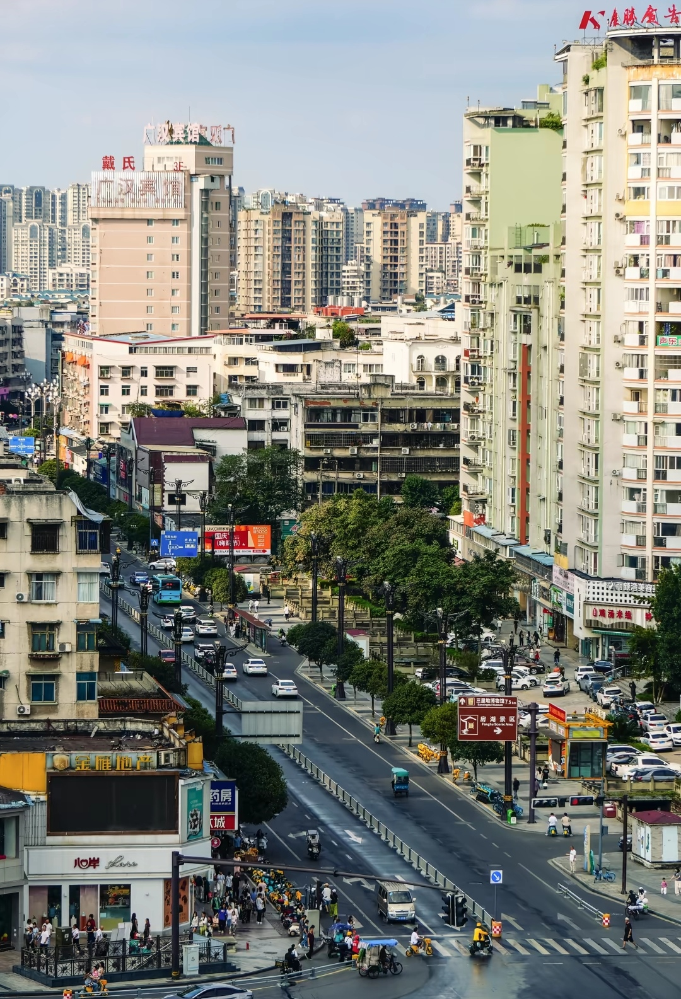

金雁湖公园
广汉人的"水上公园"，城市中的诗意栖居
广汉人的"水上公园"，城市中的诗意栖居
金雁湖公园位于广汉市鸭子河畔，始建于 1984 年 9 月，于 1991 年初步建成正式对外开放。公园总面积近 1000 亩，其中湖面 200 余亩，民间俗称"水上公园"，是一座融合东西方园林风格的现代生态景区。
2022 年至 2023 年，金雁湖完成了自建园以来规模最大的升级改造。改造后的公园从单一的休闲绿地升级为集生态、消费、健身、娱乐于一体的开放性景区，新增了智慧设施、滨水步道、夜间灯光等。2023 年获评为广汉城市更新典范项目。
公园每年承办众多大型活动：正月十六的省级非遗"广汉保保节"在此设分会场，与房湖公园遥相呼应；三至四月举办春季名花展（郁金香、牡丹等）；十月下旬举办菊花精品展。
相传很久以前，桃花仙姑因私下凡尘被佛祖罚为飞雁，囚于北门外深水沱中。人们在沱水旁架风雨桥、塑飞雁以慰仙姑。一外国古董商闻雁内有宝前来盗取，不料刚一触探，飞雁坠入沱中，化作四只金光灿灿的金雁冲天而起。此后四只金雁时常盘旋于沱水上空，用光芒造福汉州百姓。公园大门前矗立的四只展翅金雁铜像，正是源自这一美丽的民间传说。
湖边南岸两座蓝色古希腊圆堡与六根圆石柱临水挺立，300 米走道时而岸上时而水中，水面上浮桥相连，为西南地区罕见的欧式古典园林景观。
四座两对汉白玉雕像，为意大利文艺复兴巨匠米开朗基罗晚年为美第奇家族创作的墓室巨雕复制品，在西南乃至全国十分罕见。
园中心百亩草坪上矗立着大型钢铸十二生肖像，惟妙惟肖、神态各异，可声控互动，是儿童和家庭游客的必打卡处。
湖东岸金雁宫为公园标志性建筑，门前四只铜铸金雁凌空展翅。改造后的夜间灯光工程更为湖岸增添了绚丽的夜景。
金雁湖的亮点在开阔水面和城市休闲氛围。白天看湖岸、草坪，傍晚后看灯光，是市区里很轻松的一站。
沿水而行最能感受金雁湖的尺度，适合晨跑、散步和亲子停留。

金雁湖和市区生活贴得很近，适合作为半日游的放松节点。

金雁湖、房湖公园、雒城遗址距离不远，可以安排同一天游览。
四川省德阳市广汉市北京路一段 1 号
免费开放（部分游乐设施另收费）
全天开放
位于广汉市区鸭子河畔，可乘公交或步行前往